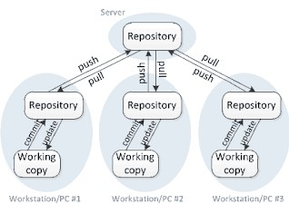

Stajımız online olması nedeniyle bizi yönlendiren sorumlumuz ile WhatsApp üzerinden iletişime geçtik. Staj sorumlumuz göreceğimiz gün gün farklı konulardaki eğitimlerden bahsetti. Beş günlük bir eğitim programına başladık.
Bu beş gün boyunca öğleden önce ve öğleden sonra olmak üzere 2’şer saat eğitim planı uygulandı.
Staj da ilgileneceğimiz projelerle alakalı ilerlemelerimizi haftalık olarak GİTHUB’ da oluşturacağımız sayfaya atmamız istenildi.
Onun öncesinde GİTHUB girişi oluşturduk.
Versiyon Kontrol Sistemi, Git ’in ne olduğunu, neden kullanmamız gerektiği, Git Servislerini, Temel Git komutlarını ve en sonunda Git in nasıl yüklenildiğini uygulamalı olarak gördük.
Versiyon Kontrol Sistemi(VCS):
VCS’nin amacı birden fazla yazılımcının aynı anda birbirlerinin değişikliklerinden etkilenmeden bir proje üzerinde çalışabilmesini sağlamaktır.
Gerektiğinde eski kodlarımıza dönerek farklı bir projede kullanabileceğiz kodları buradan direk aktarabiliriz.
Gelişen teknoloji ile birlikte her geçen gün yeni kurallar çıkmaktadır.
VCS eski kodlarla yeni kodları karşılaştırmamıza da yarar.

VCS’ nin 4 çeşidi vardır; Perforce, SVN, Mercurial ve bizimde stajda kullanacağımız Git. Bu VCS çeşitlerinden en çok kullanılan Git’dir.
Mercurial ve Perforce sistemleri genelde askeri düzeyde kullanılan güvenliği ön planda tutan sistemlerdir.
SVN, Git’e benzeyen bir sistemdir. Git’ten tek farkı çevrimdışı kullanılamamasıdır.
Git’i tercih etme nedenlerimiz; Versiyon yönetim kolaylığı,
aynı anda birden fazla yazılımcının aynı proje üzerinde çalışma imkanı sağlaması, çevrimdışı kullanılabilmesi, hızlı ve bilgilerimizi internet üzerinden bir depoda tutmamızı sağlıyor.
En çok kullanılan Git sistemleri arasında; GitLab, Bitbucket ve Github vardır.
GitLab’ın avantajı birden fazla kişi projeye dahil edildiğinde kişilere rol atanması yapılabiliyor. Sınırsız sayıda repo atanabileceği gibi açılan repoya sınırsız katılımcı eklenebiliyor.
Eğer Google’ın ıp’sını kullanacaksak doğrudan BitBucket üzerinden projelerimize entegre edebiliriz.
Github da ise açık kaynaklı proje sayısı fazladır. Aradığımız çoğu projeyi bulabiliyoruz. Öğrenciler için birçok sistem sunuyorlar.
GitHub’da yeni repo oluşturmayı uygulamalı olarak gördük. Repo dediğimiz yeni bir proje oluşturmak anlamına da geliyor;
Eğer public kısmını seçersek projemiz internette herkese açık olarak yayınlanıyor. Fakat private seçersek bu projeyi sadece biz görebiliyoruz.
Projeyi oluşturduktan sonra terminali açarak git komutlarını yazdık;
git config --global user.name "merve"
git config --global user.email "mrveeckrrr@hotmail.com"
Oluşturduğumuz repoyu bilgisayara klonladık;
git clone https://github.com/merve611/mervee611.github.io.git
Repodaki dosyaları Git’e eklemek için; git add *
Yaptığımız değişiklikleri kayıt altına almak için; git commit –m "İndex Eklendi"
Dosyanın remote repoya ulaşması için; git push
Remote repoda yaptığımız değişiklikleri local repomuza indirmek için; git pull
Projemizin durumuna göre farklı branch’ler oluşturmak için; git branch branch_ismi
Oluşturduğumuz branch’e push işlemi için; git push origin branch_name
Bugünkü eğitimimizde konumuz Flutter idi.
Eğitmenimiz ilk olarak Flutter’ın avantajlarından bahsetti.
Avantajları arasında; aynı anda hem Android hem de IOS için mobil programlama geliştirme imkanı sağlaması, açık kaynak kodlu olması vardır.
Flutter IOS için swift, Android için dart dilini kullanır.
Bu bir dezavantaj oluyor nedeni ise swift direk makine koduna döndürülürken Android’te bu işlem kademeli olarak gerçekleştiği için derleme süresi daha fazla zaman alabilmektedir.
Android Studio indirdikten sonra Visual Studio Code da kurup bilgisaylarımızı flutter çalışmaya hazır hale getirdik.
Flutter’da değişken atamalarını, aynı anda birden fazla değişken tanımlanabilme, döngü yapıları gibi ilk konulara kısaca değindik.
Flutter’da proje oluşturduktan sonra bir main metodu açıldı.
Bu sayfada Flutter’ın ana hatlarıyla genel kullanılan bir class mevcut olduğunu ve onun içinde yer alan body, children kısımlarını gördük. Flutter projesini ana hatlarıyla oluşturmuş olduk.
Projemizi bu haliyle çalıştırdığımızda işletim sistemimize göre Android ya da IOS emilatörünü çalıştırdık.
Ana ayrıntıları öğrendikten sonra Buton oluşturmaya baktık. Flutter’da normal bir buton Raised Button olarak geçiyor.
RaisedButton(
color: Colors.green,
highlightColor: Colors.red,
elevation: 10,
child: Text(
"Merhaba Dünya",
style: TextStyle(color: Colors.white),
),
onPressed: () {
print("Butona Tıklandı");
},)
,
Buton oluşturduğumuzda click olayını gerçekleştirmemiz gerekir. Bu olaya onPressed diyoruz.
Flutter da Timer konusuna değindik. Kullanacağımız bir interval değeri var ve genelde bu değere deneme amaçlı 1 verilir.
const timeout = const Duration(seconds: 3);
const ms = const Duration(milliseconds: 1);
startTimeout([int milliseconds]) {
var duration = milliseconds == null ? timeout : ms * milliseconds;
return new Timer(duration, handleTimeout);
}
...
void handleTimeout() { // callback
...
}